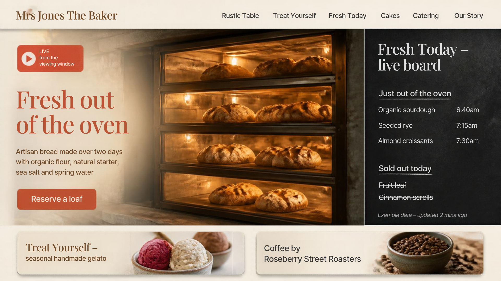
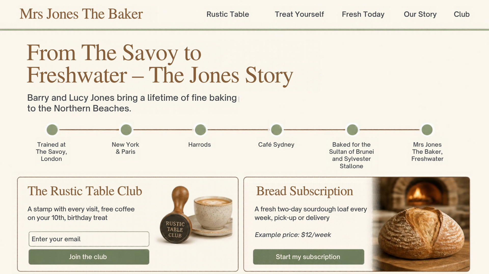

BUSINESS PLAN · NORTHERN BEACHES, SYDNEY
Websites + Instagram for local businesses, built by a 15-year-old who gets the internet.
Lots of cafes, bakeries, salons, gyms and tradies on the Beaches have an old website (or none) and an Instagram nobody has time for. I use AI tools like Cursor ("vibe coding") to build good-looking websites fast, then keep their Instagram fresh every month.
A free redesign to show what I can do. Barry and Lucy Jones trained at The Savoy in London and worked in New York, Paris, Harrods and Café Sydney. Their bakery has a great story: two-day artisan bread (organic flour, natural starter, sea salt, spring water), a four-deck hearth oven with a viewing window, celebration cakes and catering for up to 500, GF/DF options, Roseberry Street Roasters coffee and seasonal gelato.
I made 3 concept pages:
One great real example beats any sales pitch. The next two pages show the mock-ups.
SECTION 1 · THE SHOWCASE (MAIN, BRANDED VERSIONS)
Branded mock-ups kept private. The main Mrs Jones mock-ups use the bakery’s real logo and photos, so they stay private until the bakery says yes in writing. The unbranded Canva concepts are shown below.
The same 3 ideas in a different style, with no real logo or photos. Safe to show while I wait for permission.


SECTION 1 · THE SHOWCASE (THE BIG IDEA)
~A$1,500–3,000
One-off. Design, build, mobile-friendly, Google Maps, contact or order form, 2 rounds of changes. About 2 weeks.~A$99/mo
Hosting, updates, menu and price changes, small fixes, a quick monthly check that everything works.~A$300–500/mo
12 posts + stories, captions, hashtags, scheduling, a one-page monthly report.Rough guesses only. Test them with the first 3 clients, then adjust. A "both" bundle (website care + Instagram) could get a small discount.
Every client gets a mix of 4 post types. Real, local and simple beats fancy.
| Post type | What it is | Bakery example |
|---|---|---|
| Behind the scenes | The work: prep, tools, the process. Hands are fine, no faces without permission. | Loaves going into the four-deck oven |
| Fresh today | What's new, what's ready now, what's nearly gone. | "Seeded rye just out, 6 left" |
| Story | Who they are and why they care. | The Savoy to Freshwater; why bread takes two days |
| Customer posts | Reposts of customer photos and reviews, always with their OK. | A customer's birthday cake photo |
| Mon | Tue | Wed | Thu | Fri | Sat | Sun |
|---|---|---|---|---|---|---|
| Behind the scenes post | Story only: "fresh today" | Story post | Story only: poll or Q&A | Fresh today post (weekend specials) | Customer post / review | Rest, or 1 story |
One post of each type a week (4 posts). On the basic plan, skip one a week: about 12 posts a month, plus stories on most days.
30 min with the owner: what's coming up (specials, events, holidays)? Write a shot list.
One 1–2 hour visit, ideally on a weekend morning. Phone, good light, short clips and photos.
Canva/CapCut: 12 posts, captions, hashtags (#Freshwater #NorthernBeaches). Owner approves.
Load them into Meta Business Suite (free). Add live "fresh today" stories through the month.
Most sales come from following up, not the first visit. Keep it friendly and short, and stop if they say no.
| When | What | What I say or do |
|---|---|---|
| Day 1 | Walk in | Quiet time (not the lunch rush). Show the mock-up on my phone: "I made this for a bakery in Freshwater. Want me to do a free check of your website and Instagram?" Leave a card. |
| Day 3 | Message (Instagram DM or email) | "Thanks for chatting on Tuesday. Here's your free one-page check with 3 quick wins." Attach it. |
| Day 7 | Phone call | "Did the 3 tips make sense? Would you like a quote?" If not now, ask if I can check back in 2 months. |
I keep every lead in a simple sheet: name, business, date, next step, result.
| When | What |
|---|---|
| Every month (first week) | 15-minute check-in, in person or a call: go through the monthly report, plan next month's posts, and ask "Anything you need changed on the website?" |
| Within 1 school day | Reply to any client message (after 4:30pm). Urgent website problems go to Dad if I'm at school. |
| Every 3 months | Ask for a review or testimonial, and for 2 names of other owners who might want help. |
| Number | Where I get it | Why it matters |
|---|---|---|
| Followers (and change) | Instagram insights | Is the audience growing? |
| Reach | Instagram insights | How many people saw the posts |
| Website visits | Hosting analytics (e.g. Vercel/Netlify) or Google Analytics | Are people checking the site? |
| Orders / enquiries from Instagram | Link clicks, DMs, and asking at the counter: "How did you hear about us?" | The number the owner cares about most |
2,340
+85 this month9,800
+22% vs last month1,450
310 from Instagram14
6 cake bookingsAll numbers above are made up to show the layout. Keep it to one page, in plain words.
| Tool | What I use it for | Approx. cost |
|---|---|---|
| Cursor | AI coding to build the websites | ~US$20/mo (about A$30) |
| Hosting (Vercel or Netlify) | Putting sites online | Free to ~US$20/mo |
| Domain (.com.au) | The web address (client usually pays) | ~A$20–40 per year |
| Canva | Instagram graphics and mock-ups | Free, or Pro ~A$20/mo |
| Scheduler | Meta Business Suite to schedule posts (or Later/Buffer for extras) | Free, or ~A$15–40/mo |
| Rough total to start | ~A$50–110 / month | |
Approximate prices. Check current prices before paying. Dad pays the subscriptions from the business account.
| Service | Time each month |
|---|---|
| Website care only | ~1–2 hours (updates, checks, small fixes) |
| Instagram care | ~6–8 hours (plan 0.5, film 1–2, edit 3–4, schedule 0.5, report 0.5, check-in 0.25) |
| New website build (one-off) | ~15–25 hours over about 2 weeks |
With about 10–12 hours a week to work (see section 9), that's about 4–5 Instagram clients at most. Update: with Dad building alongside Tomas using Grok Bot, we can build about 3 sites a week, so sales is the real limit (section 11).
| Type | Why they're good clients |
|---|---|
| Cafes and bakeries | Look great on Instagram; daily "fresh today" content; my showcase is a bakery |
| Salons (hair, nails, lashes) | Before/after photos; bookings come from Instagram |
| Gyms and studios | Classes, timetables, transformations; need sign-ups |
| Surf shops | Summer rush, new stock, local surf culture |
| Trades (builders, plumbers, landscapers) | Often have old or no websites; before/after jobs |
Where, in order: 1 Freshwater 2 Manly 3 Dee Why 4 Mona Vale Start close to home, where the Mrs Jones example means most.
| Customer group | What they want to see |
|---|---|
| Locals aged 25–55 within ~10 km | What's fresh today, opening hours, specials, faces of the team (with permission) |
| Parents | Kids' birthday cakes, school-holiday treats, easy weekend breakfasts |
| Event planners (for cakes and catering) | Wedding and celebration cakes, catering for up to 500, how to book |
| Tourists in summer | Beach-day coffee and gelato, "best bakery near Freshwater Beach" |
| Setting | Example for Mrs Jones The Baker |
|---|---|
| Goal | More cake enquiries (people tap "Book a cake") |
| Location / radius | ~8–10 km around Freshwater |
| Age | 25–55 |
| Interests | Bakeries, coffee, brunch, weddings, birthday parties, parenting, Northern Beaches |
| Ad | Short reel of a cake being finished, with "Design your celebration cake" |
| Budget | About A$5–10 a day for 7 days (around A$35–70), paid by the client from their ad account |
| Check after 7 days | Cost per click, enquiries, and whether to keep it, change it or stop |
Ads run from the client's own Meta account. Meta needs adults to manage ad accounts and payments, so the owner (or Dad) controls the money side.
DAYS 1–30
DAYS 31–60
DAYS 61–90
| Item | Example | Amount |
|---|---|---|
| Website builds | 3 × A$1,800 | A$5,400 one-off |
| Monthly clients (by day 90) | 5 × ~A$350 average | A$1,750 / month |
| Tool costs | about A$80 / month × 3 | −A$240 |
| Example first 90 days (if monthly clients build up over months 2–3) | roughly A$6,500–7,000 before tax | |
Real results could be much lower, especially at first. Some months there may be no new clients, and that's normal. Section 10 has the full 2-year forecast, using Dad's real tool costs (about A$393 a month, not A$80).
I'm 15. Dad co-signs contracts and handles payments, invoicing, the ABN and tax. Clients pay the business, not me directly.
School comes first. I work from 4:30pm on school days and some weekend hours. If school needs more time, I take fewer clients.
Permission and privacy. I never post a client's logo, photos, customers or staff without permission. The Mrs Jones mock-ups stay private until they say yes.
Under-promise, over-deliver. Clear dates, honest prices, and I tell clients early if something will be late.
Start with one great example. Then do it again.
A forecast P&L for Nov 2026 to Oct 2028 in three versions. Each one is driven by sales: how many businesses we reach, how many chats that turns into, and how many say yes. Dad can build about 3 sites a week with Tomas and Grok Bot, so building is not the limit. Every figure here is a forecast, not a promise. Prices are the plan's own (section 2).
P&L: Profit and loss: money in, minus money out, month by month.
Revenue: All the money clients pay (build fees plus monthly fees), before costs.
Retainer: A fixed monthly fee for ongoing work: website care (A$99) or Instagram care (A$300 to A$500).
Lead: A business we contact: a walk-in, a DM, a referral or someone who messages us.
Conversion: The share of leads who get to a real sales chat, then the share of chats that buy (the win rate).
Gross / net profit: Gross: revenue minus card fees. Net: gross minus tools, Grok Bot share, Canva, setup and any helper.
Cumulative cash: Net profit added up month after month. Below zero means Dad has put in more than has come back.
Break-even: The first month cumulative cash is back to zero or above and stays there: Dad is paid back.
Churn: Monthly clients who stop paying. We assume 4–6% of them leave every month.
CONSERVATIVE
A$80,924 2-year net profit
| Year 1 | Year 2 | |
| Revenue | A$29k | A$65k |
| Costs | A$5.7k | A$7.6k |
| Net profit | A$24k | A$57k |
| Sites built | 17 | 31 |
| Sites a week | 0.3 | 0.6 |
| Clients at end | 6 | 14 |
Break-even: Mar 27. Lowest cash: −A$1,296.
REALISTIC
A$239,470 2-year net profit
| Year 1 | Year 2 | |
| Revenue | A$77k | A$205k |
| Costs | A$7.6k | A$36k |
| Net profit | A$70k | A$170k |
| Sites built | 36 | 78 |
| Sites a week | 0.7 | 1.5 |
| Clients at end | 19 | 52 |
Break-even: Jan 27. Lowest cash: −A$903.
STRETCH
A$558,955 2-year net profit
| Year 1 | Year 2 | |
| Revenue | A$165k | A$584k |
| Costs | A$19k | A$171k |
| Net profit | A$146k | A$413k |
| Sites built | 73 | 208 |
| Sites a week | 1.4 | 4.0 |
| Clients at end | 46 | 158 |
Break-even: Jan 27. Lowest cash: −A$903.
Conservative Realistic Stretch (dashed line = start of year 2)
| The sales funnel (forecast) | Conservative | Realistic | Stretch |
|---|---|---|---|
| Leads a week, year 1 (once ramped up) | 12 | 16 | 22 |
| Leads a week, year 2 | 15 | 24 | 44 |
| Leads → sales chat | 20% | 25% | 30% |
| Sales chat → won site (win rate) | 20% | 25% | 30% |
| Leads needed for 1 site | about 25 | about 16 | about 11 |
| Sites a week: month 6 → year 2 | 0.5 → 0.6 | 0.9 → 1.5 | 2.1 → 4.0 |
| Capacity used in year 2 (of 3 a week) | 20% | 50% | 133% |
| Sales time a week: year 1 → year 2 | about 5 h → 7 h | about 8 h → 12 h | about 12 h → 24 h |
| Build clients who take care · Instagram | 40% · 10% | 50% · 15% | 60% · 20% |
CONSERVATIVE
REALISTIC
STRETCH
All amounts A$, rounded, forecasts only. Minus signs are costs. Client counts are averages, so they can grow and shrink slowly. Revenue arrives the month after a client says yes (the site is built, then paid). GST and tax are not included.
| Conservative · year 1 (A$) | Nov 26 | Dec 26 | Jan 27 | Feb 27 | Mar 27 | Apr 27 | May 27 | Jun 27 | Jul 27 | Aug 27 | Sep 27 | Oct 27 | Year 1 |
|---|---|---|---|---|---|---|---|---|---|---|---|---|---|
| Leads a week | 1 | 3 | 5 | 8 | 12 | 12 | 12 | 12 | 12 | 12 | 12 | 15 | |
| Sites built (paid) | 0 | 0 | 0 | 1 | 2 | 2 | 2 | 2 | 2 | 2 | 2 | 2 | 17 |
| Care · IG clients | 0·0 | 0·0 | 0·0 | 0·0 | 0·0 | 1·0 | 2·0 | 3·1 | 3·1 | 4·1 | 4·1 | 5·1 | |
| Build fees | 0 | 0 | 0 | 1,500 | 3,000 | 3,000 | 3,000 | 3,000 | 3,000 | 3,000 | 3,000 | 3,000 | 25,500 |
| Website care retainers | 0 | 0 | 0 | 0 | 40 | 116 | 189 | 257 | 320 | 380 | 437 | 490 | 2,228 |
| Instagram retainers | 0 | 0 | 0 | 0 | 30 | 88 | 143 | 194 | 243 | 288 | 331 | 371 | 1,688 |
| Revenue | 0 | 0 | 0 | 1,500 | 3,070 | 3,205 | 3,332 | 3,451 | 3,563 | 3,668 | 3,768 | 3,861 | 29,416 |
| Card fees (Stripe) | 0 | 0 | 0 | −25 | −51 | −54 | −56 | −59 | −61 | −63 | −64 | −66 | −499 |
| Gross profit | 0 | 0 | 0 | 1,475 | 3,018 | 3,151 | 3,275 | 3,392 | 3,502 | 3,606 | 3,703 | 3,795 | 28,917 |
| Grok Bot share | −348 | −348 | −348 | −348 | −348 | −348 | −348 | −348 | −348 | −348 | −348 | −348 | −4,170 |
| Canva Pro | −14 | −14 | −14 | −14 | −14 | −14 | −14 | −14 | −14 | −14 | −14 | −14 | −165 |
| Other tools + setup | −149 | −31 | −31 | −31 | −31 | −31 | −31 | −31 | −31 | −143 | −143 | −143 | −829 |
| Helper (assumption) | 0 | 0 | 0 | 0 | 0 | 0 | 0 | 0 | 0 | 0 | 0 | 0 | 0 |
| Net profit | −511 | −393 | −393 | 1,082 | 2,626 | 2,758 | 2,883 | 3,000 | 3,110 | 3,102 | 3,199 | 3,291 | 23,754 |
| Cumulative cash | −511 | −903 | −1,296 | −214 | 2,412 | 5,170 | 8,052 | 11,052 | 14,162 | 17,264 | 20,463 | 23,754 |
| Realistic · year 1 (A$) | Nov 26 | Dec 26 | Jan 27 | Feb 27 | Mar 27 | Apr 27 | May 27 | Jun 27 | Jul 27 | Aug 27 | Sep 27 | Oct 27 | Year 1 |
|---|---|---|---|---|---|---|---|---|---|---|---|---|---|
| Leads a week | 2 | 4 | 7 | 11 | 16 | 16 | 16 | 16 | 16 | 16 | 16 | 24 | |
| Sites built (paid) | 0 | 0 | 1 | 2 | 3 | 4 | 5 | 4 | 4 | 5 | 4 | 4 | 36 |
| Care · IG clients | 0·0 | 0·0 | 1·0 | 1·0 | 2·0 | 4·1 | 6·1 | 8·2 | 10·3 | 11·3 | 13·4 | 15·4 | |
| Build fees | 0 | 0 | 1,800 | 3,600 | 5,400 | 7,200 | 9,000 | 7,200 | 7,200 | 9,000 | 7,200 | 7,200 | 64,800 |
| Website care retainers | 0 | 0 | 99 | 145 | 238 | 377 | 560 | 785 | 951 | 1,111 | 1,314 | 1,460 | 7,039 |
| Instagram retainers | 0 | 0 | 0 | 45 | 133 | 263 | 432 | 640 | 794 | 943 | 1,130 | 1,265 | 5,645 |
| Revenue | 0 | 0 | 1,899 | 3,790 | 5,771 | 7,840 | 9,992 | 8,625 | 8,946 | 11,054 | 9,644 | 9,925 | 77,485 |
| Card fees (Stripe) | 0 | 0 | −32 | −64 | −97 | −132 | −168 | −147 | −152 | −188 | −165 | −171 | −1,316 |
| Gross profit | 0 | 0 | 1,867 | 3,726 | 5,674 | 7,708 | 9,824 | 8,478 | 8,793 | 10,866 | 9,479 | 9,754 | 76,169 |
| Grok Bot share | −348 | −348 | −348 | −348 | −348 | −348 | −437 | −348 | −348 | −437 | −348 | −348 | −4,349 |
| Canva Pro | −14 | −14 | −14 | −14 | −14 | −14 | −14 | −14 | −14 | −14 | −14 | −14 | −165 |
| Other tools + setup | −149 | −31 | −31 | −31 | −31 | −143 | −143 | −196 | −196 | −196 | −196 | −196 | −1,539 |
| Helper (assumption) | 0 | 0 | 0 | 0 | 0 | 0 | 0 | 0 | 0 | 0 | −45 | −232 | −277 |
| Net profit | −511 | −393 | 1,474 | 3,333 | 5,281 | 7,204 | 9,230 | 7,921 | 8,236 | 10,219 | 8,877 | 8,965 | 69,839 |
| Cumulative cash | −511 | −903 | 571 | 3,904 | 9,186 | 16,389 | 25,619 | 33,541 | 41,777 | 51,997 | 60,874 | 69,839 |
| Stretch · year 1 (A$) | Nov 26 | Dec 26 | Jan 27 | Feb 27 | Mar 27 | Apr 27 | May 27 | Jun 27 | Jul 27 | Aug 27 | Sep 27 | Oct 27 | Year 1 |
|---|---|---|---|---|---|---|---|---|---|---|---|---|---|
| Leads a week | 2 | 6 | 10 | 16 | 22 | 22 | 22 | 22 | 22 | 22 | 22 | 44 | |
| Sites built (paid) | 0 | 0 | 3 | 3 | 6 | 9 | 9 | 8 | 9 | 9 | 8 | 9 | 73 |
| Care · IG clients | 0·0 | 0·0 | 1·0 | 3·1 | 4·1 | 8·2 | 13·4 | 18·6 | 22·7 | 26·9 | 31·10 | 34·11 | |
| Build fees | 0 | 0 | 5,400 | 5,400 | 10,800 | 16,200 | 16,200 | 14,400 | 16,200 | 16,200 | 14,400 | 16,200 | 131,400 |
| Website care retainers | 0 | 0 | 99 | 273 | 441 | 779 | 1,283 | 1,766 | 2,171 | 2,618 | 3,048 | 3,401 | 15,879 |
| Instagram retainers | 0 | 0 | 0 | 210 | 412 | 815 | 1,413 | 1,986 | 2,467 | 2,998 | 3,508 | 3,928 | 17,736 |
| Revenue | 0 | 0 | 5,499 | 5,883 | 11,652 | 17,794 | 18,895 | 18,152 | 20,837 | 21,816 | 20,956 | 23,529 | 165,015 |
| Card fees (Stripe) | 0 | 0 | −92 | −99 | −196 | −299 | −320 | −309 | −355 | −373 | −360 | −405 | −2,808 |
| Gross profit | 0 | 0 | 5,407 | 5,784 | 11,456 | 17,495 | 18,576 | 17,843 | 20,482 | 21,443 | 20,596 | 23,125 | 162,207 |
| Grok Bot share | −348 | −348 | −348 | −348 | −437 | −437 | −437 | −437 | −437 | −437 | −437 | −437 | −4,886 |
| Canva Pro | −14 | −14 | −14 | −14 | −14 | −14 | −14 | −14 | −14 | −14 | −14 | −14 | −165 |
| Other tools + setup | −149 | −31 | −31 | −31 | −143 | −196 | −196 | −196 | −196 | −196 | −196 | −203 | −1,763 |
| Helper (assumption) | 0 | 0 | 0 | 0 | 0 | 0 | −94 | −752 | −1,303 | −1,912 | −2,497 | −2,978 | −9,536 |
| Net profit | −511 | −393 | 5,014 | 5,392 | 10,863 | 16,849 | 17,835 | 16,445 | 18,533 | 18,885 | 17,452 | 19,493 | 145,856 |
| Cumulative cash | −511 | −903 | 4,111 | 9,503 | 20,366 | 37,214 | 55,049 | 71,494 | 90,027 | 108,911 | 126,364 | 145,856 |
| Year 2 by quarter (A$) | Nov 27–Jan 28 | Feb–Apr 28 | May–Jul 28 | Aug–Oct 28 | Year 2 |
|---|---|---|---|---|---|
| Conservative | |||||
| Sites built (a week) | 8 (0.6) | 8 (0.6) | 8 (0.6) | 7 (0.5) | 31 (0.6) |
| Revenue | 15,222 | 16,248 | 17,035 | 16,254 | 64,759 |
| Costs (incl. helper) | −1,772 | −1,897 | −1,965 | −1,953 | −7,588 |
| Net profit | 13,449 | 14,351 | 15,070 | 14,301 | 57,171 |
| Cumulative cash (end) | 37,203 | 51,554 | 66,624 | 80,924 | |
| Care · IG clients (end) | 7 · 2 | 9 · 2 | 10 · 3 | 11 · 3 | |
| Realistic | |||||
| Sites built (a week) | 20 (1.5) | 19 (1.5) | 20 (1.5) | 19 (1.5) | 78 (1.5) |
| Revenue | 46,490 | 48,836 | 54,214 | 55,670 | 205,210 |
| Costs (incl. helper) | −4,977 | −7,791 | −10,275 | −12,536 | −35,579 |
| Net profit | 41,513 | 41,045 | 43,939 | 43,134 | 169,631 |
| Cumulative cash (end) | 111,352 | 152,397 | 196,336 | 239,470 | |
| Care · IG clients (end) | 21 · 6 | 28 · 8 | 34 · 10 | 40 · 12 | |
| Stretch | |||||
| Sites built (a week) | 52 (4.0) | 52 (4.0) | 52 (4.0) | 52 (4.0) | 208 (4.0) |
| Revenue | 123,872 | 139,772 | 153,840 | 166,286 | 583,770 |
| Costs (incl. helper) | −28,219 | −38,613 | −47,840 | −55,999 | −170,671 |
| Net profit | 95,652 | 101,159 | 106,000 | 110,287 | 413,099 |
| Cumulative cash (end) | 241,509 | 342,668 | 448,668 | 558,955 | |
| Care · IG clients (end) | 56 · 18 | 80 · 26 | 100 · 33 | 119 · 39 | |
| Start | Month 1 is Nov 2026. The first site (Mrs Jones The Baker) is built free as the showcase. In realistic and stretch, Mrs Jones pays for website care from Jan 2027. Dad funds every cost until the business pays it back. |
| Sales drive it | Leads a week ramp up over the first 5 months (10%, 25%, 45%, 70%, then 100% of the full effort). A won client's site is built and paid the following month. From Oct 2027 leads step up to the year-2 level. Conversion rates are in section 11. |
| Build capacity | About 3 sites a week, with Dad building alongside Tomas using Grok Bot. Tomas's 12-hours-a-week limit no longer sets the number of builds. Only stretch year 2 (about 4 a week) goes over it; each extra site costs a helper about A$700 (20 h at A$35/h, assumption). |
| Prices | Plan prices only. Builds: A$1,500 (conservative, low end of the A$1,500–3,000 range) or A$1,800 (the plan's example). Website care A$99/mo. Instagram care A$300/mo, or A$350 in stretch (the plan's example average). No bundle discount. |
| Retainers + churn | The month after a build, a share of clients start care or Instagram (section 11). Each month 6% (conservative) or 4% (realistic, stretch) of monthly clients leave. |
| Tools | Dad's budget tiers by monthly clients: Start lean A$392.68 (under 5), Growing A$503.91 (5–9), Pro A$556.93 (10–24). Scale tier (assumption) from 25 clients: Pro plus A$7.17 per Instagram client over 10 (Buffer channel) and an extra Netlify Pro (A$28.66) per 50 clients. Canva Pro A$13.75. |
| Grok Bot | Tomas's share is A$347.50/mo (25% of Dad's real invoices, mid usage) at up to 4 builds a month, A$437.06 (budget high case) at 5–9, and A$695 (assumption: 50% share) at 10 or more. |
| Helper (assumption) | Tomas can do about 45 hours of monthly client work (Instagram ~7 h, care ~1.5 h per client). Extra hours are paid to a helper at A$35/h. Check award wages and rules before hiring anyone. |
| Per client | Clients register and pay for their own domains (A$9.95 first year, then A$22.95/yr), so A$0 here. Hosting is inside the A$99 care fee and Dad's Netlify plan. Card fees: Stripe 1.65% + A$0.30 per payment. |
| Not included | GST and income tax are not modelled. Prices are treated as the amount received. Not costed: Dad's and Tomas's own time, ads for the studio, travel and equipment. Sales time is an estimate (15 min per lead, 1 h per sales chat). |
| Check first | Under-18 business matters (contracts, ABN, who owns the business, tax, GST once income passes A$75,000 a year, insurance in Dad's name, hiring a helper) should be checked with an accountant before the first paid job. |
| Risk | What could happen | What we do about it |
|---|---|---|
| Not enough leads | Sales is the speed limit. If we reach half the leads, we win about half the sites. Walk-ins only happen after 4:30pm and on weekends. | Track leads every week. Brookvale list first, then referrals and Instagram. Dad helps sell. |
| Lower win rates | Owners say “maybe later”. A 20% win rate instead of 30% cuts stretch builds by a third. | Lead with the Mrs Jones showcase and a free check; follow up day 1 / 3 / 7. |
| Fixed costs early | About A$393 a month with zero clients, mostly the Grok Bot share. | First 2 paid sites cover it. Dad reviews the share each quarter. |
| Monthly work piles up | Every new client adds care or Instagram work. Realistic needs a helper from late year 1; stretch year 2 pays about A$148k for help. | Postiz scheduling and Grok Bot templates to cut hours; hire help only when the money is in. |
| Churn | If 8% leave a month instead of 4%, year-2 retainer income falls by about a fifth. | Monthly report and check-in; show results. |
| Quality at speed | 3–4 sites a week can mean rushed sites and unhappy clients. | Templates per trade; 2 rounds of changes; no promises we can't keep. |
| School, money and law | School comes first. Big numbers bring GST, tax, contracts and hiring rules. | Accountant before the first paid job; Dad co-signs; 50% deposit on builds. |
CONSERVATIVE
REALISTIC
STRETCH